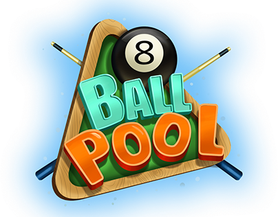

Este é um jogo de sinuca em JavaScript.
Utilize o mouse para mirar.
Clique com o botão esquerdo dar a tacada.
Se a bola branca for encaçapada, você perde.
Sua pontuação é composta pelo numero das bolas coloridas encaçapadas.
O numero da bola será o número de pontos que você obterá quando acertar o buraco.
Clique aqui para voltar ao site principal.